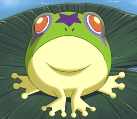

Best Frogs
- Calm Frog

While this frog has less background information then other frogs on this list, it still deserves the prestigious 3rd best frog position because of it's perfect attitude. This level of relaxation is something I strive for and I'm ngl, I'm a little jealous of this frog which may have contributed to it's position on this list.
- Demon Frog 
Unlike the Calm Frog, the demon frog is nearly the arcetype of choatic evil. This frog posses Kirby in the animated television series Kirby: Right Back at Ya! and turns Kirby into Devil Kirby in the episode Frog Wild. Demon Frog is responsible for devil Kirby's actions in the show which include vandalism, destruction of property, and battery. While these behaviors are gnerally frowned upon, Demon Frog makes up for it by being so gosh darn cute!
- Keroppi

Keroppi is bestie